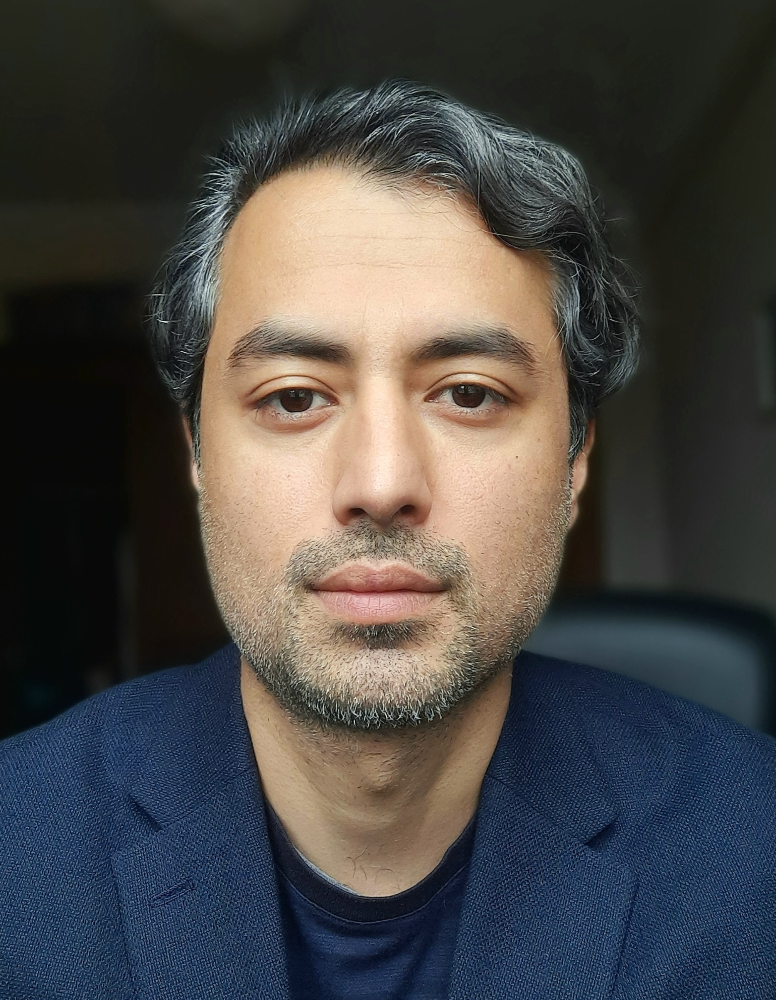

My research focuses on the political economy of development, international institutions, postwar governance and digital development (For more on my research, see here and here).
Currently, I am a research fellow at Lund University. I have held a non-resident research fellowship at the Graduate School of Development, University of Central Asia, with prior research and teaching experience at Durham University, SOAS, and University College London. I have authored a monograph (Palgrave) and published in academic journals, including Global Policy and Third World Quarterly. I hold a PhD from University College London.
Brief personal bio: Born in Kabul in 1988, I spent my formative early years in Afghanistan before migrating to Pakistan in the 1990s. After earning an undergraduate degree in economics in India (2007--2010), I migrated to the United States on a diversity immigrant visa and later became a citizen, and have lived and worked between the UK and France since 2016.